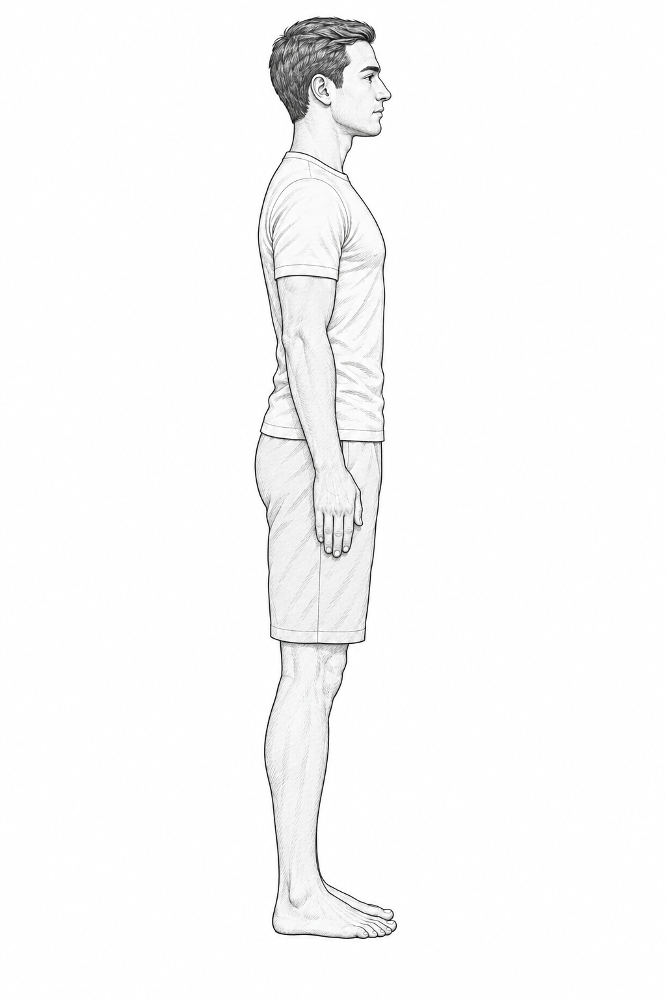

Anatomical sketches: credits and limitations
Return to the plane explorer · Prompts and provenance
The anterior and lateral drawings were generated for this project using the built-in image generation tool, then inspected for the intended pose and reference directions. They depict clothed illustrative adults; they are not photographs of real people, measured body models or registered views. No OpenStax image pixels or replaced photographic pixels are incorporated.
The source definitions for anatomical position and the sagittal, coronal and transverse planes were checked against OpenStax Anatomy and Physiology 2e §1.6. This is attribution for the teaching definitions, not a claim that OpenStax created, reviewed or endorsed the drawings.


Vector traces, labels, guides and teaching layout are project-authored. Guides are imaginary projections, not actual cuts or observed markings. Position choices are qualitative; no metric scale, internal structure or physiological timing is inferred. The earlier photographs' original credits are retained in historical source records; those photos are no longer displayed by this lesson.
Median sagittal sketch · Coronal sketch · Transverse sketch · Combined plate